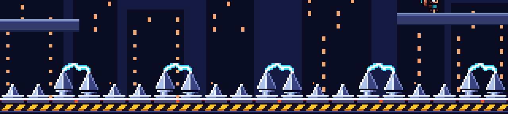
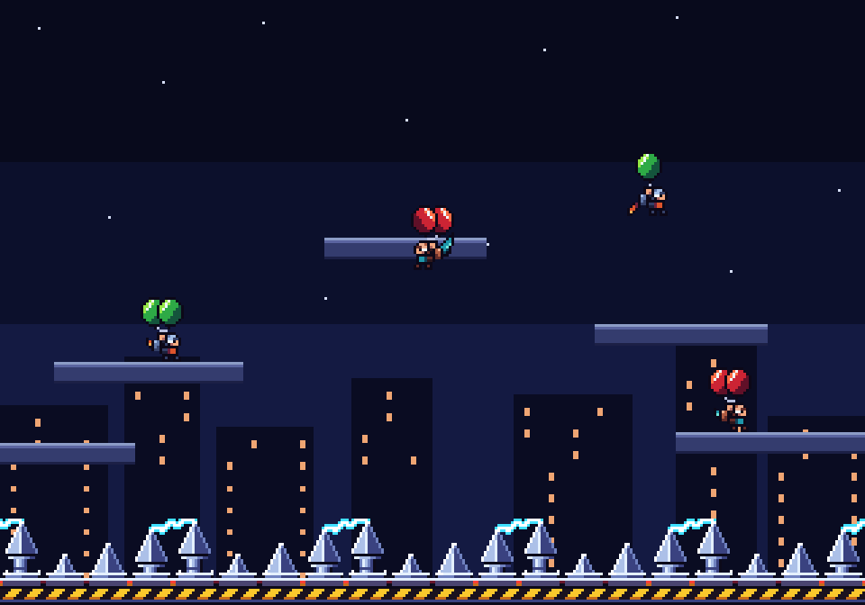
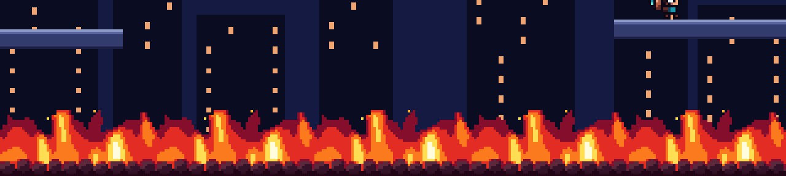
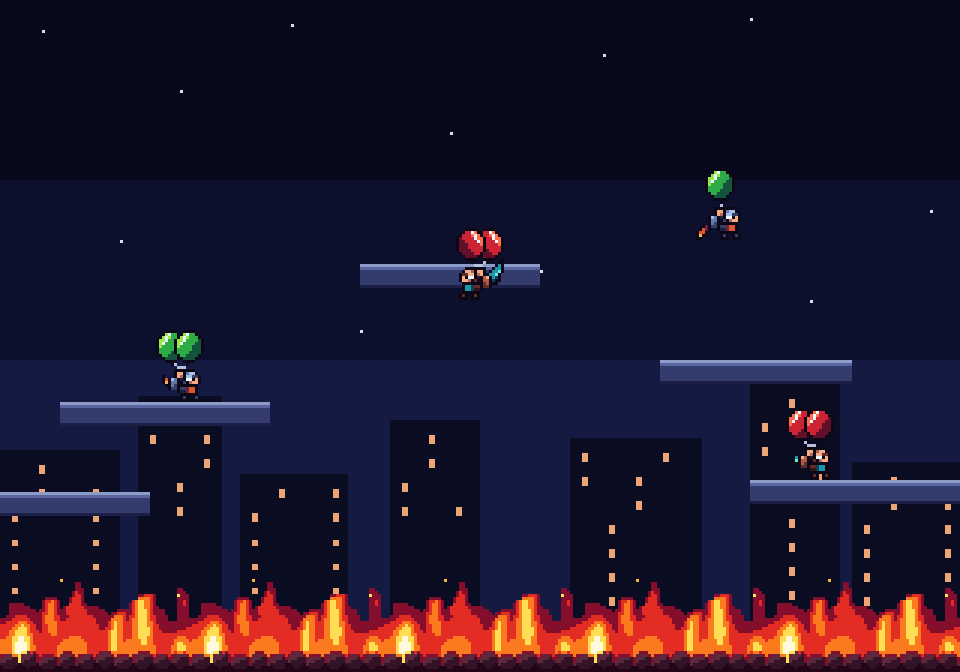
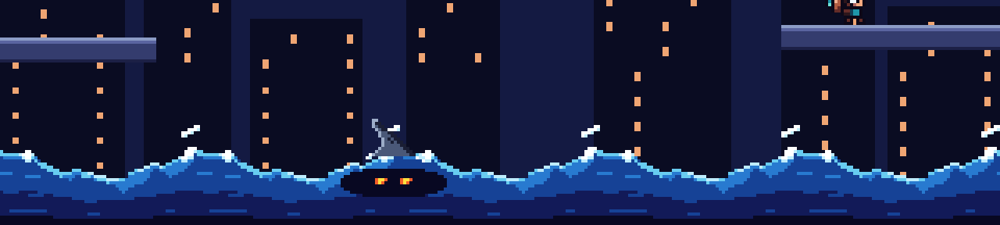
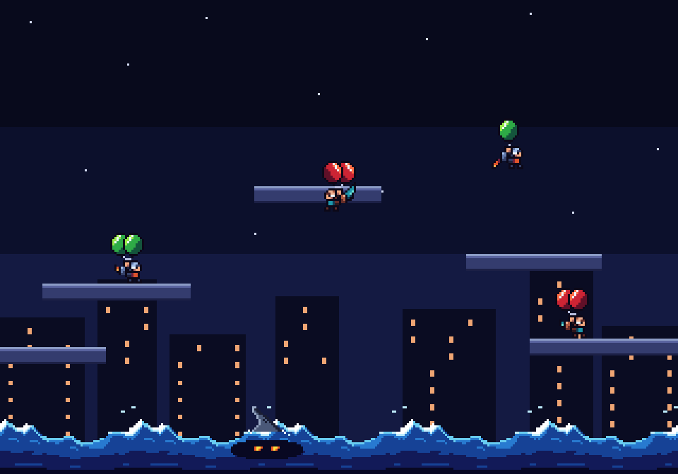
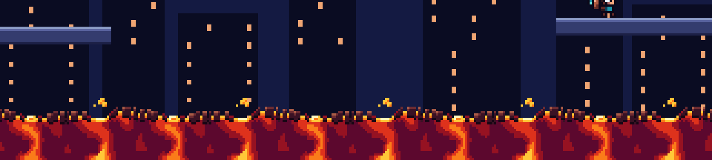
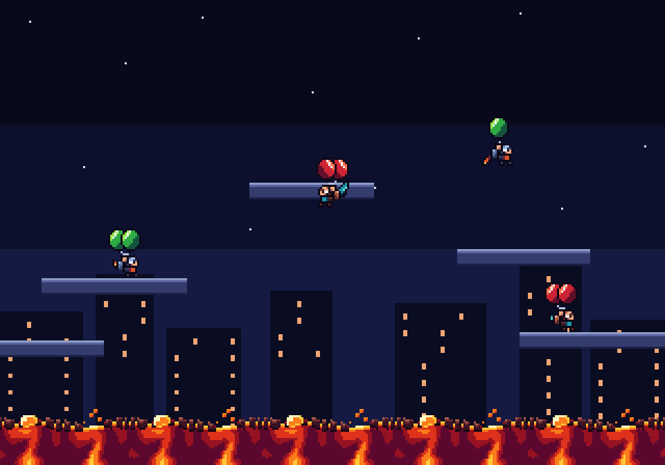
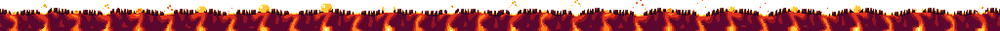

Roofline bottom hazards, round 2
Simulated motion baked to seamless loops. Tile period 64 x 32 pixels. Hard cel bands, no gradients, no dither. Pick per hazard, or name what to push further.
A: Spikes
Four pistons, each a mass on a spring chasing a square-wave target: stiff under-damped thrust (overshoot and ring), soft near-critical retraction, staggered a quarter loop apart. An electric arc jumps between raised neighbours; slam sparks fly on ballistic arcs.
14 colours of 15. 16-frame loop at 4 video frames (67 ms) per frame; the 8-frame cut holds each frame twice as long. Tile ROM cost: 128 tiles (16 frames) or 64 tiles (8 frames).
16 frames (software animation)

8 frames (hardware auto-animation)

In the arena

Tile frames at 1x
B: Fire
Temperature field advected upward (semi-Lagrangian, 192x96 grid) through a time-periodic divergence-free turbulent velocity field, with buoyancy proportional to temperature and cooling that grows with height. Tongues stretch, pinch off and detach. Sparks are particles with buoyancy and drag in the same gas flow.
9 colours of 15. 16-frame loop at 4 video frames (67 ms) per frame; the 8-frame cut holds each frame twice as long. Tile ROM cost: 128 tiles (16 frames) or 64 tiles (8 frames).
16 frames (software animation)

8 frames (hardware auto-animation)
In the arena

Tile frames at 1x
C: Water
Sum of five Gerstner waves in both directions obeying the deep-water dispersion relation (1, 4 and 9 crests per tile at 1, 2 and 3 cycles per loop), so crests travel at different speeds, merge and separate. Foam is produced where the surface compresses, is carried by the water parcels and decays. Shimmer dashes sit where refracted rays focus. Droplets fly on ballistic arcs from the strongest breaks. The lurker rides the simulated height.
12 colours of 15. 16-frame loop at 6 video frames (100 ms) per frame; the 8-frame cut holds each frame twice as long. Tile ROM cost: 128 tiles (16 frames) or 64 tiles (8 frames).
16 frames (software animation)

8 frames (hardware auto-animation)
In the arena

Tile frames at 1x
D: Lava
Surface: damped wave equation with viscosity, kicked by bubble bursts. Body: temperature advected round swaying convection rolls, heated in pulses from below, cooled under old crust. Crust plates ride the surface flow from upwelling to downwelling and crack once per loop. Two bubbles swell, dome, burst into a crown and throw droplets.
10 colours of 15. 16-frame loop at 8 video frames (133 ms) per frame; the 8-frame cut holds each frame twice as long. Tile ROM cost: 128 tiles (16 frames) or 64 tiles (8 frames).
16 frames (software animation)

8 frames (hardware auto-animation)
In the arena

Tile frames at 1x
